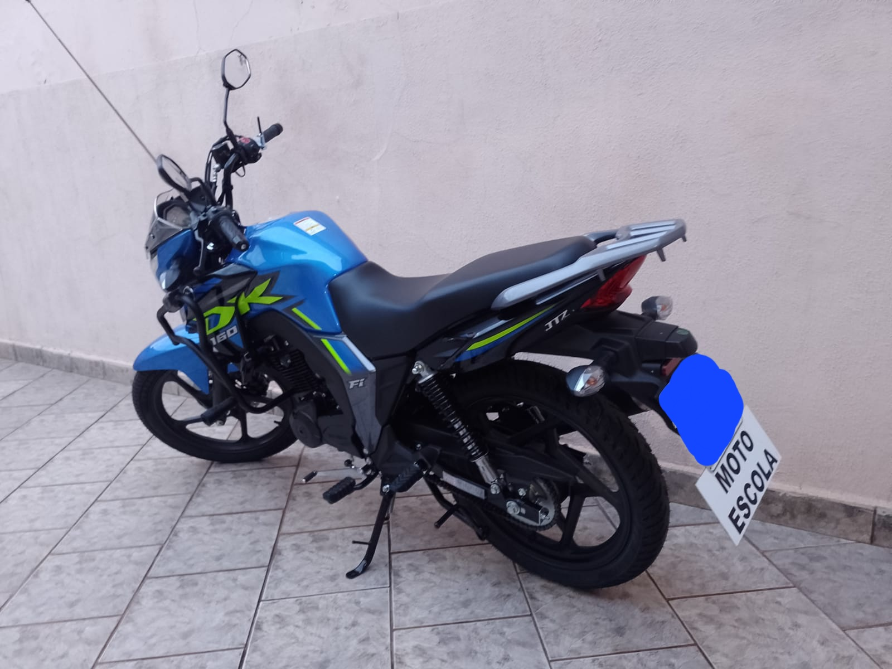

Aulas particulares de carro e moto na Região Metropolitana de Campinas. Preparação completa para o exame técnico e prático com método personalizado para cada aluno.

Com mais de 23 anos dedicados ao ensino de direção na Região Metropolitana de Campinas, desenvolvi um método que vai além das técnicas: entendo as necessidades individuais de cada aluno.
Preparação completa para você passar com confiança no exame do DETRAN.
Aulas práticas de direção veicular para quem está tirando a primeira habilitação, reciclando ou precisando de confiança para voltar a dirigir.
Treinamento completo em motocicleta com foco em segurança, equilíbrio, manobras e condução no trânsito real.
Simulados e treinos específicos para o exame de baliza, garagem e demais provas técnicas exigidas pelo DETRAN.
Treinamento no percurso real dos examinadores — aprenda os itens de avaliação e elimine os erros mais comuns de reprovação.
Programa especial para motoristas que ficaram um tempo sem dirigir e desejam retomar com segurança, no seu ritmo.
Método adaptado para alunos com TDAH, autismo, dislexia e outras especificidades. Seu jeito de aprender é respeitado.
Não sou só instrutor — sou o guia que vai ao seu lado até você passar.
Duas e mais décadas formando motoristas. Conheço todos os percursos, as pegadas dos examinadores e os pontos que reprovam mais.
Nunca grito, nunca pressiono. Meu objetivo é que você saia de cada aula mais confiante do que entrou.
Muitos instrutores não têm preparo para trabalhar com motoristas mais velhos. Tenho. Respeito o seu tempo e valorizo cada conquista.
TDAH, autismo, dislexia? Adapto as aulas ao seu estilo de aprendizado — sem julgamento, sem pressa, com resultado.
Atendo toda a Região Metropolitana de Campinas, com flexibilidade de horário para caber na sua rotina.
Preparo você especificamente para os exames do DETRAN — técnico e prático — sem enrolação e com taxa de aprovação elevada.
A aprovação mais importante é a dos meus alunos.
Tinha 67 anos e achava que jamais voltaria a dirigir. O Cléssio foi incrivelmente paciente comigo. Em 3 meses, passei no exame e hoje levo meus netos para a escola!
Tenho TDAH e já reprovei em outras autoescolas. O Cléssio foi o único que entendeu minha dificuldade. Adaptou tudo para mim e passei na primeira tentativa!
Havia reprovado 2 vezes no exame prático. Fiz 5 aulas com o Cléssio focadas nos meus erros e passei na terceira tentativa. O método dele é diferente de tudo que já vi.
Queria tirar a moto mas tinha muito medo. O Cléssio foi do zero comigo, sem pular etapas. Hoje ando de moto todos os dias para o trabalho. Gratidão enorme!
Minha filha tem autismo leve e precisava tirar a habilitação. Tentamos em vários lugares sem sucesso. Com o Cléssio foi diferente desde a primeira aula. Ela passou!
Primeira habilitação aos 45 anos. Muito nervosa e insegura. Mas a paciência do Cléssio me deu confiança aula por aula. Passei no exame e me sinto uma motorista de verdade!
Atendo as principais cidades da região com flexibilidade de horário.
Levo as aulas até você — ou você vem até mim. Flexibilidade total para encaixar na sua rotina, incluindo fins de semana.
Não encontrou sua cidade? Entre em contato — provavelmente atendo!
💬 Verificar minha cidadeRegião Metropolitana
de Campinas — SP
Dicas, novidades e orientações para motoristas de todas as idades.
O CONTRAN atualizou diversas normas para a obtenção da habilitação. Entenda o que mudou e como se preparar.
A amaxofobia afeta milhões de pessoas. Descubra as causas, os sinais e as estratégias para superar o medo ao volante.
Com o acompanhamento certo, motoristas mais velhos podem retomar a direção com segurança, independência e qualidade de vida.
TDAH, autismo, dislexia — tirar a habilitação é totalmente possível. Saiba como o ensino adaptado faz toda a diferença.
Reprovar faz parte do processo para muitos. Entenda os motivos mais comuns e como se preparar melhor para a próxima tentativa.
Entre em contato agora mesmo. Respondo rapidinho pelo WhatsApp e já conversamos sobre o que você precisa.